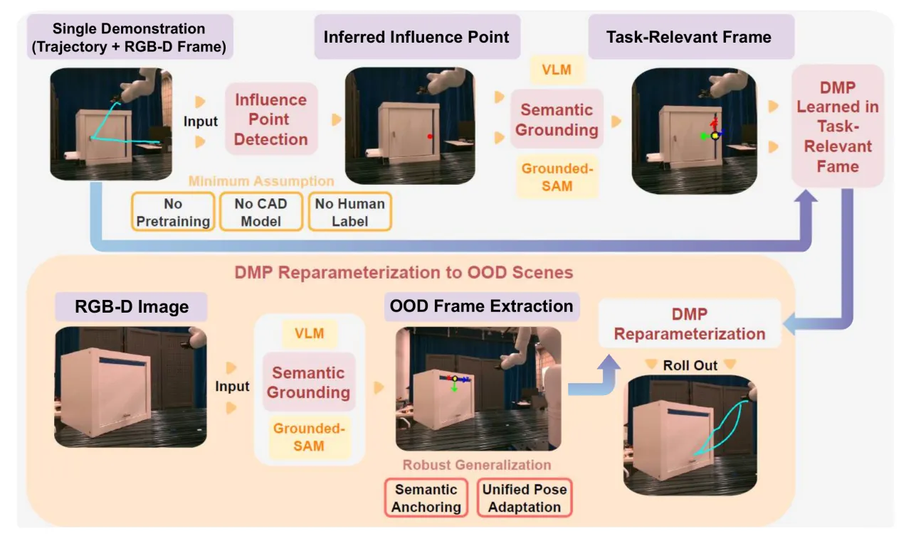
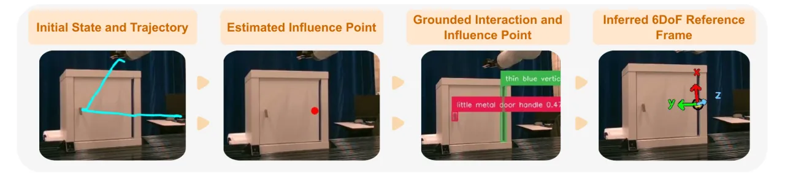
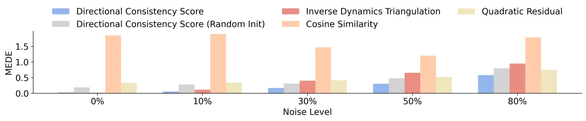
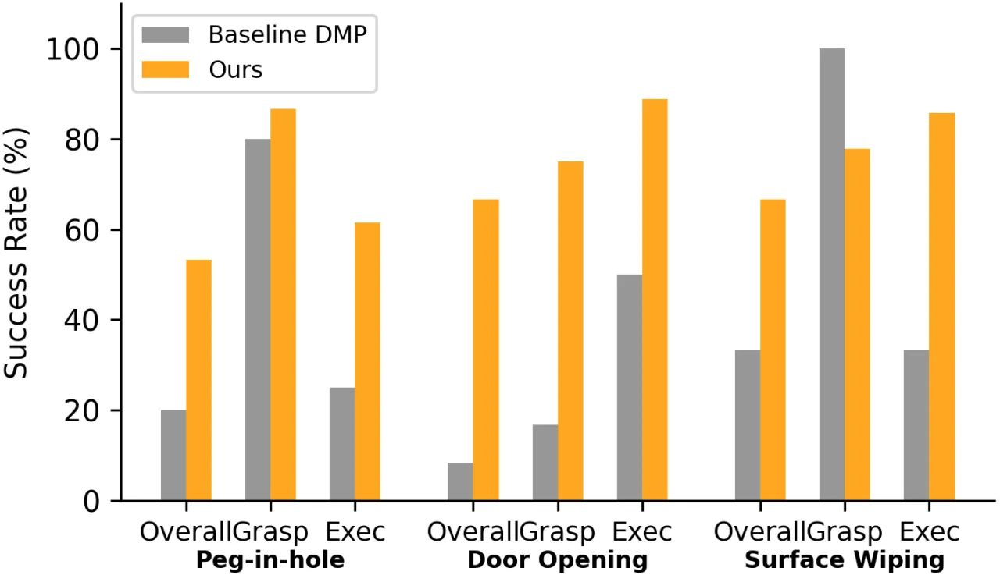

机器人难以从单次演示泛化，症结在于缺乏可迁移、可解释的空间表征。TReF-6 只用一条轨迹的几何结构推断出一个抽象的 6DoF Task-Relevant Frame：先从轨迹动力学优化出一个 influence point 作为局部坐标系原点，再用 VLM 做语义锚定、用 Grounded-SAM 在新场景中定位，最后据此重参数化 DMP。由此让最简单的控制器（DMP）也能在物体位姿、朝向、铰链几何大幅变化时保持任务意图。
训练数据永远无法穷尽所有 OOD 场景，因此研究者转向提取结构化表征（如刚体位姿、keypoints）来支撑泛化。但已有工作大多在泛化 goal pose、sub-goals 或 contact，很少去泛化轨迹本身所编码的空间约束——比如开门轨迹的弧度其实暗示了铰链约束，而不仅仅是把手位置。作者认为：演示轨迹的形状不只是起点与终点，它隐含了避障、机械约束（如铰链）、人体工学偏好等信息；对任意两点存在无穷多条路径，而演示者总走可复现的特定曲线，这背后是更凝练的潜在几何结构。
核心研究问题：能否用单次演示推断出一个任务相关的空间参考系，它既是 (1) semantically identifiable（锚定到场景特征），又是 (2) functionally meaningful（保留约束），从而在物体位姿与配置变化时实现泛化？

TReF-6 不修改 DMP 的动力学，而是把演示轨迹重参数化到一个推断出的局部坐标系里。整条 end-to-end 流程分三阶段：Influence Point Inference → Semantic Grounding → DMP Reparameterization。
作者假设演示运动由某个主导空间约束塑造——绕铰链的旋转（轴约束）、沿货架的移动（面约束）、朝插孔的对齐（点约束）。与其为每种约束单独建模，不如推断一个位于潜在点 p 的统一 6DoF 坐标系。给定轨迹 {xt}，定义 directional consistency score S(p)：把「从 xt 指向 p 的单位方向」与观测到的加速度 ẍt 比较，取二者差值范数的时间平均的相反数。分数越高，说明轨迹动力学越一致地指向候选点 p。因为依赖二阶导且方向已归一化，该分数天然反映时序动力学、且对力的大小变化鲁棒。
求解 p* = argmaxp S(p) 时，由于向量归一化与时序误差聚合，score landscape 存在大量局部最优与平坦区，对初始化高度敏感。作者的关键洞察：好的初始化应满足 (1) sharp gradients 与 (2) proximity to ground truth。据此用加速度范数 ||ẍt|| 最大的 top-k 时间步的均值加高斯噪声来初始化，把优化放在梯度更陡处；再用中心有限差分近似梯度、Adam 平滑波动并加速收敛（Algorithm 1）。
把 p* 作为坐标系原点后，用 GPT-4o 做两阶段 refine：第一阶段用叠加了演示轨迹的初始 RGB 图生成高层 task label；第二阶段用叠加了 influence point 的同一张图，让模型描述该点与 interaction point（机器人首次开始与环境交互处）对应的细粒度视觉特征。该自然语言描述交给 Grounded-SAM 分割并 refine 点。随后在 refine 点处计算表面法向作为 z 轴；由 z 轴与「refine 点→interaction point」向量确定 yz 平面，正交得 x 轴，z×x 得 y 轴——同时编码了局部几何（法向）与任务方向性（interaction point）。

little metal door handle 与 thin blue vertical 门缝）→ Inferred 6DoF Reference Frame（最终坐标系，z 轴对齐门面法向）。把演示的笛卡尔位置 xt 与四元数姿态 qt 从 world frame 变换到推断的 task-relevant frame，计算相对于起始位姿的相对运动 Δxt、Δqt，并分别拟合 Cartesian DMP 与 quaternion DMP。部署时，在新场景推断新的 p* 与坐标系、算出新起始位姿，DMP 据此 roll out 相对运动，最后经逆变换映射回 world frame。
两条评估线：(a) 仿真——在已知 ground-truth influence point 的 3D 环境里，用 MEDE（Mean Euclidean Distance Error）度量推断精度，在方向与幅值噪声下测鲁棒性；(b) 真机——7-DoF Kinova Gen3 上做 3 个轨迹形状/对齐至关重要的任务，每个任务仅 1 次演示 + 多个 OOD 变体。由于 affordance / goal-conditioned 等强基线都需要 CAD、大量训练或丰富接触信息（本设定下不可得），作者以 privileged DMP（可访问物体位置、或在贴近演示的布置下执行）作为最强可行基线。

作者方法的 MEDE 从 10% 噪声的 0.0560 ± 0.0276 仅温和上升到 80% 噪声的 0.5814 ± 0.3722。对照：Inverse Dynamics Triangulation 在 0% 噪声下达到最佳 0.0127 ± 0.0157，但 80% 噪声时恶化到 0.9747 ± 0.5689；Quadratic Residual 即使无噪声也有 0.3311 ± 0.2217。

| 任务（变体数） | 指标 | Baseline DMP | Ours | Δ |
|---|---|---|---|---|
| Peg-in-hole 投放（15） | Overall | 20.0% | 53.3% | +33.3% |
| Grasp | 80.0% | 86.7% | +6.7% | |
| Exec (given grasp) | 25.0% | 61.5% | +36.5% | |
| Cabinet 开门（12） | Overall | 8.3% | 66.7% | +58.3% |
| Grasp | 16.7% | 75.0% | +58.3% | |
| Exec (given grasp) | 50.0% | 88.9% | +38.9% | |
| Surface Wiping（9） | Overall | 33.3% | 66.7% | +33.3% |
| Grasp | 100.0% | 77.8% | −22.2% | |
| Exec (given grasp) | 33.3% | 85.7% | +52.4% |
如实呈现：在 Surface Wiping 的抓取（Grasp）一项，privileged 基线达 100.0%，反而比本方法（77.8%）高 22.2%；但在「已成功抓取后的执行」上本方法 85.7% 反超基线 52.4 个百分点。
由于定位依赖开箱即用、未针对本任务微调的 Grounded-SAM，偶尔会出现 semantic mis-segmentation；处理此类外部语义歧义留待未来工作。
TReF-6 只抽取单个 influence point 来定义 6DoF 坐标系。更复杂的空间约束理论上可能需要更丰富的表征；但作者的实验表明，单坐标系抽象在多样的原子任务上实践中已足够泛化。
方法聚焦于「物体已获取之后」的运动生成，把工具/物体建模为单个代表点，不涉及 grasp planning 或复杂接触交互，假设可行抓取已达成。实验显示一旦正确抓取后执行成功率接近满分；未来将把 grasp planning 纳入同一空间坐标系统一推理。